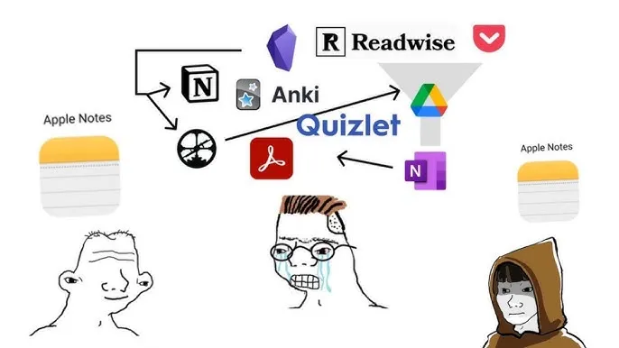
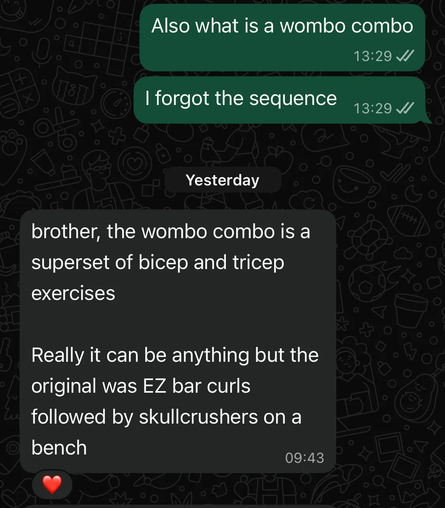
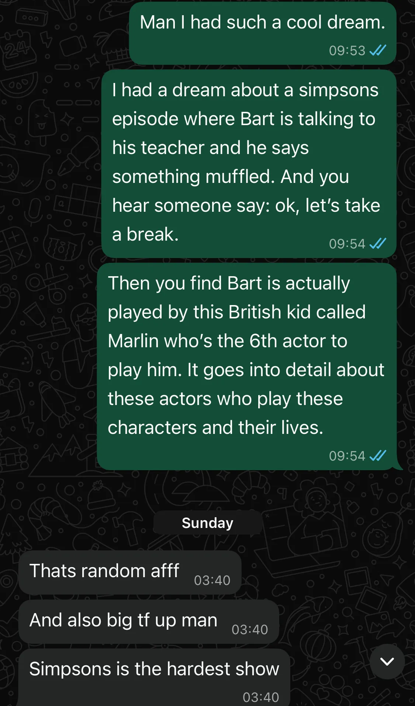
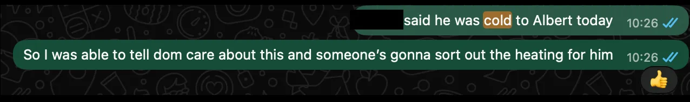
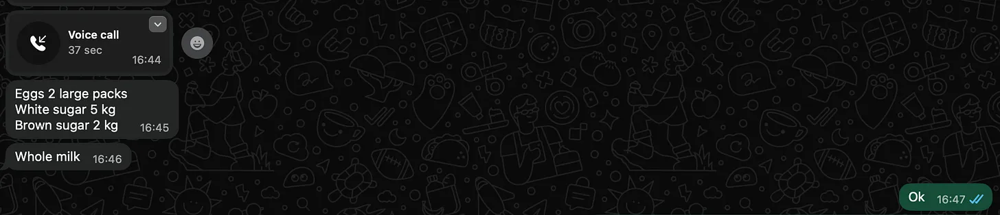

Table of Contents
Are you tired of making 1000s of notes, optimising your productivity, and having nothing work out for you? When you learn a new piece of information, do you get a panic attack thinking about how this will fit inside your Obsidian structure?
<b>Do you see the meme below and get sent into an existential crisis?</b>

Fear not! Turns out your average messenger client (iMessage, WhatsApp, etc.) can basically do all that stuff for you! And it gets even better if you get your friends involved.
How hard is a note-taking system anyway?
All note-taking systems do two things:
- Write a note
- Retrieve a note
There are primarily two ways of writing notes on WhatsApp:
- Sending texts to yourself
- Spamming intrusive thoughts to your friends
Retrieving notes is simply a matter of searching for the text you sent or asking your friend for information.
We are going to go over Method 2, because Method 1 is pretty obvious and this would be a boring blog post if we talked about how to search the texts you send to yourself.
Retrieving Notes You Didn’t Even Write
One of the beautiful things about using WhatsApp is that you can rely on your friends’ more capable brains for information.
Each database specialises in different things. Some are for business, some are for the gym, and some are just for memes. The more friends you have, the more databases you have.
For example - Retrieving the best superset for arms from my Gym friend:

Getting positive affirmations from your notes
Does your note-taking system cheer you on? No — computers don’t have hormones (they do have souls though, but that’s for a different post). You tell your computer you broke your bench press PR and all it does is echo back what you told it.
Traditional note-taking enables narcissism. Now spamming your friends with intrusive thoughts? That is more like it!

<i> I predict there will be an episode on this </i>
This method has a guaranteed reaction with every note you write. Spamming your homies raises the happiness for everyone!

<i> I even got a little thumbs up for this! </i>
Automatic Task Generation
Sometimes, people will just write what you need to do for you. Super convenient.
Take this great example of things I need to buy from Tesco.

So yeah, text your friends more
And maybe, people will feel less lonely :)